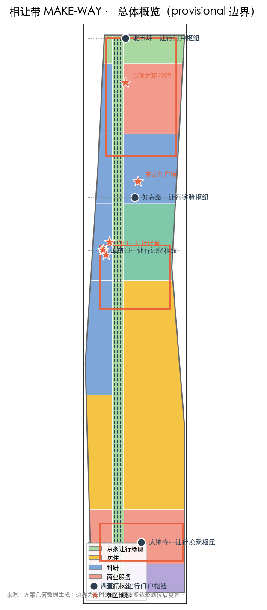
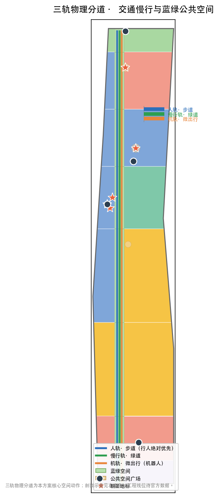

统筹研究范围 43.6 km²
世界级 AI 创新生态、三区两翼耦合网络、AI 产业与未来城市形态。
- 相让带命名与 Logo 系统
- 五大功能空间化
- 8 个全球 AI 生态案例
离线电子展示成果。权威数据以 GeoJSON、metrics.json、矩阵和自检结果为准；本页把总览地图、三层范围、重点区域、用地分区、人机共行街道、蓝绿公共空间、AI 场景、核心指标、任务覆盖、来源与假设转成人类可读的视觉说明。
让行中轴沿 9 公里京张遗址绿廊贯穿南北；三大重点区域、五大让行枢纽与 AI 朝圣地标叠加在同一证据图中。

图件由方案几何（GeoJSON）在 EPSG:4548 复算生成；边界为临时约束。
统筹研究范围 43.6 km² → 总体设计范围 11.4 km² → 重点区域范围 368.4 ha，逐级落实"让行"主线。
世界级 AI 创新生态、三区两翼耦合网络、AI 产业与未来城市形态。
官方"一带一轴两心多点"×让行叠加：让行中轴、五大让行枢纽、人机共行三轨街道。
众智园·加速出站 / 原点社区·原点让行 / 大钟寺·换乘枢纽。
三大重点区域围绕同一条人机共行主线分工，形成"规则—加速—应用"回路。
加速出站：AI 全栈五层 + FlagOS 算子库 + 出海窗口；具身智能上街测试场、AI 体育训练测试场。
原点让行：规则从这里诞生——《让行规则》实验室与原点让行广场；社区智能养老、人机共行日常。
换乘枢纽：交通×商业×古寺文化三站交汇；承接"大钟寺1733"文商旅样本。
每张卡说明服务对象、空间位置、数据/隐私边界与人工复核；≥3 张为产业测试验证场景。全部受《让行规则》与数据治理约束。
通勤者/商户 · 三轨街道 · 路径脱敏 · 平台+巡查复核
通勤程序员 · 让行中轴 · 站点数据 · 运营商+交管
师生/居民 · 众智园段 · 体征脱敏 · 教练+运营方
社区老人 · 原点社区 · 健康数据脱敏 · 社区+医疗
游客 · 大钟寺 · 无 · 博物馆复核
商户/游客 · 1733/卫星厂 · 消费脱敏 · 商户自查
青年/开发者 · 五道口广场 · 无 · 运营方
居民 · 沿街驿站 · 健康数据脱敏 · 医疗机构
社区/园区 · 沿带节点 · 视频匿名化 · 物业+治理平台
企业 · 众智园 · 企业数据隔离 · 园区运营
机器人企业 · 卫星厂段测试场 · 测试日志 · 测试委员会
运动科技企业 · 众智园段 · 运动数据 · 专业教练
自动驾驶企业 · 大钟寺段 · 轨迹数据 · 交管+第三方
用地分区拓扑安全覆盖提交边界；让行中轴"人轨/慢行轨/机轨"三轨并行，蓝绿公共空间依托 9 公里绿廊与枢纽广场。

用地分区（居住/科研/商业/教育/文化/绿地）与分期实施：一期规则示范 → 二期枢纽成网 → 三期全域运营；拆改留为概念分区，地块级结论待官方权属与现状数据。
原点社区《让行规则》实验室、知春路—五道口示范三轨街道。
五大让行枢纽、场景卡落地、三轨街道成网。
全域共行体系、全球"让行节"与规则社区运营。
≥3 个 AI 朝圣地标承载文化叙事；《让行规则》作为城市公共产品回应"AI 治理全球话语权"。
百年记忆原点，站房已修复。
科技自主原点与铁路原点，卫星厂与北段主题广场。
"让行最初的课堂"与青年社区运营原点。
compliance_matrix.json 覆盖公告 1.3、1.4、1.5 与 agent.1–agent.6；standard_matrix.json（9 项标准）与 design_depth_matrix.json 证明专业覆盖。
来源见 sources.json（29 条，含官方/清权/背景分类与 usable_for_formal 标注）、agent_taskbook.json 与 standards/references。本页不加载 CDN、远程瓦片、外部脚本、外部字体、API 或 iframe。
待补官方多边形、控规条件、权属、现状建筑、市政条件在 assumptions.json（13 条）列明，正文以"待正式数据补齐"表述。